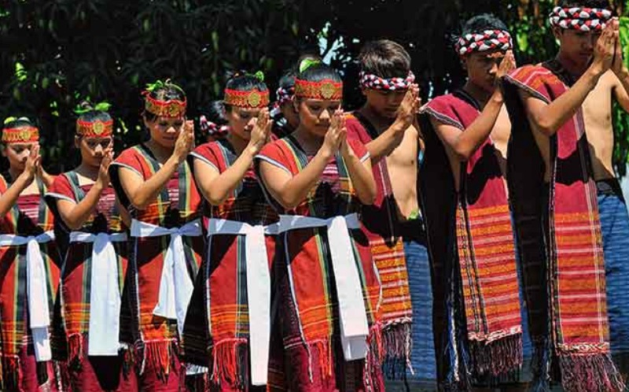
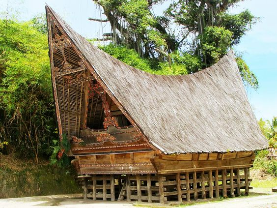

Warisan yang Tak Ternilai
Setiap aspek budaya Batak memiliki makna mendalam dan terus dilestarikan hingga kini

Kain Ulos
Kain tenun tradisional yang memiliki nilai sakral dan filosofis mendalam. Setiap corak dan warna memiliki makna khusus dalam upacara adat.

Tari Tortor
Tarian tradisional yang diiringi musik Gondang, melambangkan rasa syukur, doa, dan penghormatan kepada leluhur dan tamu yang dihormati.

Rumah Bolon
Rumah adat tradisional berbentuk panggung dengan arsitektur unik yang mencerminkan kearifan lokal dan nilai-nilai kebersamaan.